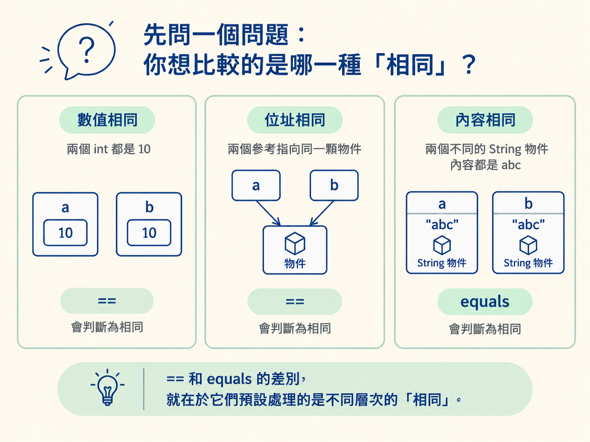
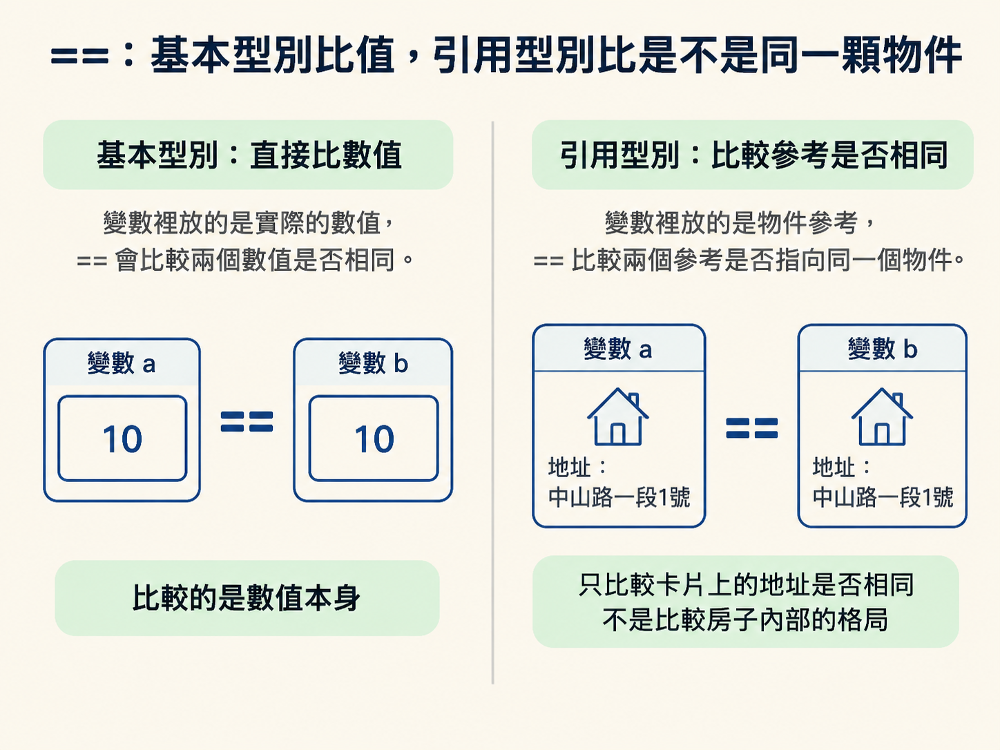
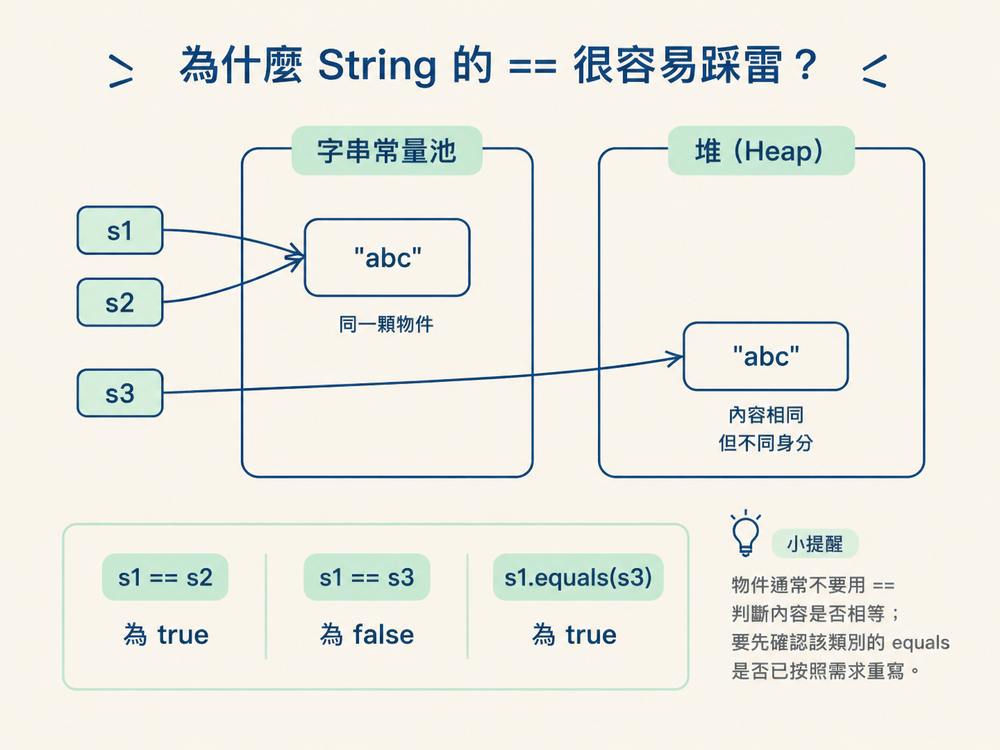
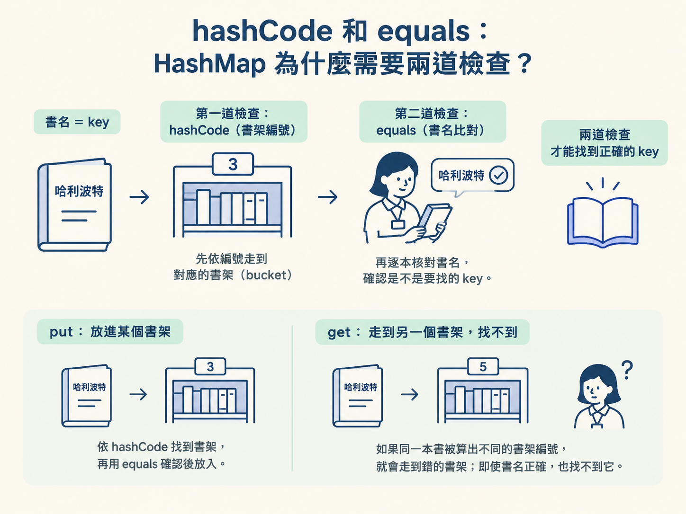
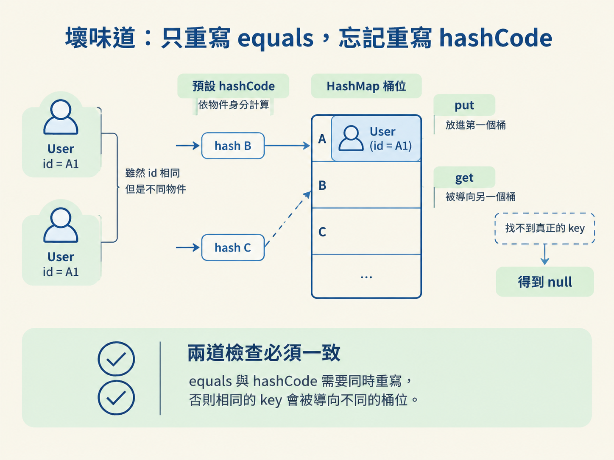

==、equals 到底在比什麼？equals，會讓 HashMap、HashSet 找不到或重複存入資料。
看到兩個 Java 變數時，「它們相等嗎？」其實可能有三種意思：
int 都是 10。String 都是 "abc"。== 和 equals 的差別，就在於它們預設處理的是不同層次的「相同」。

| 情境 | == 比什麼 | equals 比什麼 |
|---|---|---|
| 基本型別 | 數值 | 不適用 |
沒有重寫 equals 的類別 | 位址 | 位址，效果等同於 == |
String、Integer 等類別 | 位址 | 內容 |
==：基本型別比值，引用型別比是不是同一顆物件基本型別的變數裡直接放的是值，所以用 == 比較時，看的就是數值。
但引用型別的變數裡放的是物件參考。這時候 == 比的不是物件內容，而是兩個參考是否指向同一個物件。就像兩個人手上各拿一張地址：== 問的是「是不是同一個地址」，不是「兩間房子的格局是否一樣」。

equals 則是 Object 定義的方法。Object 的預設實作就是用 this == obj 比較，因此沒有重寫時，equals 和 == 的結果一樣。只有類別自行重寫 equals，它才可能改成比較內容。
String 的 == 很容易踩雷？String 重寫了 equals，所以可以用內容比較；但 == 的規則沒有因此改變，依然是在比兩個參考是否指向同一個物件。
字串常量會放進字串常量池，內容相同的字面值通常可以共用同一個物件；但使用 new 時，會另外建立一顆物件。於是「內容一樣」不代表「物件是同一顆」。
String s1 = "abc";
String s2 = "abc";
String s3 = new String("abc");
System.out.println(s1 == s2); // true，都指向常量池同一顆
System.out.println(s1 == s3); // false，s3 是堆上另外一顆
System.out.println(s1.equals(s3)); // true，內容相同所以，物件通常不要用 == 判斷內容是否相等；要先確認該類別的 equals 是否已按照需求重寫。

hashCode 和 equals：HashMap 為什麼需要兩道檢查？只理解 == 和 equals 還不夠。當物件被拿去當作 HashMap 的 key，或放進 HashSet，還會用到 hashCode。
它們之間有一份不能破壞的契約：
equals 回傳 true，它們的 hashCode 必須相等。hashCode 相等的兩個物件，equals 不一定為 true。這種情況叫雜湊碰撞，是正常現象。hashCode 就應該保持一致。可以把 HashMap 想成一間分區的大倉庫：
hashCode 先決定要走到哪一區，也就是哪個 bucket。equals 確認是不是要找的那個 key。hashCode，書名像 equals。館員先依編號走到那一排，再逐本核對書名。如果同一本書前後被算出兩個不同的架號，館員就會走到錯的書架；即使書名完全正確，也找不到它。

equals，忘記重寫 hashCode以下的 User 只把 id 當成相等條件，卻忘了同步重寫 hashCode：
class User {
String id;
User(String id) { this.id = id; }
@Override
public boolean equals(Object o) {
if (!(o instanceof User)) return false;
return id.equals(((User) o).id);
}
// 忘了重寫 hashCode
}
Map<User, String> map = new HashMap<>();
map.put(new User("A1"), "Amy"); // hash 落在某個桶
System.out.println(map.get(new User("A1"))); // null乍看之下，兩個 User 的 id 都是 "A1"，equals 也會回傳 true，應該找得到才對。但問題在於：預設的 hashCode 通常是依物件身分計算，這兩個 User 是不同物件，因此很可能得到不同的雜湊值。
put 把資料放進第一個桶，get 卻被導向另一個桶。它根本沒有機會遇到那個真正的 key，自然只能得到 null。

HashSet 也有同樣的問題：同一個 id 的物件可能被重複放入，因為集合先依 hashCode 找候選位置。修法很簡單：如果用哪些欄位實作 equals，就要用同一組欄位實作 hashCode。
金額比較常用 BigDecimal，但它有一個面試很常考的細節：BigDecimal 的 equals 會同時比較數值與精度（scale），而 compareTo 只比較數值大小。
BigDecimal a = new BigDecimal("1.0");
BigDecimal b = new BigDecimal("1.00");
System.out.println(a.equals(b)); // false，scale 一個是 1 一個是 2
System.out.println(a.compareTo(b)); // 0，代表數值相等1.0 和 1.00 在金額意義上通常代表同一個數字，但它們的小數位數不同。因此，若需求是判斷金額數值是否相等，應該寫成 compareTo(...) == 0，不要直接使用 equals。
float、double？浮點數使用二進位表示小數，而許多十進位小數無法用二進位精確表示。這就像拿有限刻度的尺去量一段無法整除的長度：每次計算都可能留下微小誤差。
System.out.println(0.1 + 0.2); // 0.30000000000000004結果不是預期的 0.3。這種誤差對金額不可接受，也讓浮點數的等值比較變得不可靠。
金額應使用 BigDecimal，建立物件時建議傳入字串，或使用 BigDecimal.valueOf，避免先經過 double，在建立 BigDecimal 之前就已經失去精度。
遇到等值比較時，先問自己：現在要比的是數值、物件位址，還是物件內容？
==。equals。HashMap 或 HashSet：重寫 equals 時，必須一起重寫 hashCode。BigDecimal 比數值：使用 compareTo(...) == 0。float 或 double。